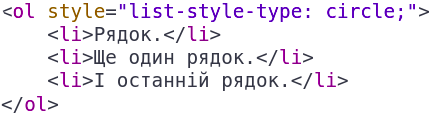
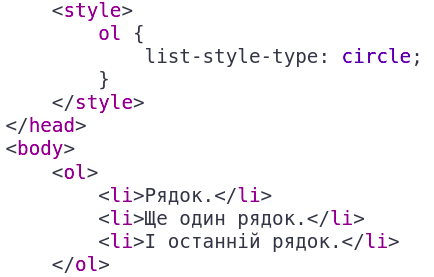
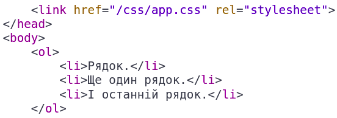

Тема:
- Каскадні таблиці стилів. Селектори. Ідентифікатори. Стильове оформлення текстових елементів в HTML-документах.
Мета:
- Набути практичні навички роботи з селекторами, ідентифікаторами, списками, різноманітними властивостями кольору та фону, зовнішніми та внутрішніми відступами, плаваючими елементами, оформленням текстових елементів.
В попередній лабораторній роботі згадувалося, що у HTML-документу є 2 види списків: <ul></ul> використовується для додавання непронумерованого списку в HTML-документ, а для додавання пронумерованого списку використовується HTML-тег <ol></ol>.
До основних CSS стилів списків належать list-style-type, list-style-image, list-style-position та list-style. Приклад:
-
list-style-type - визначає тип маркеру (можливі значення: circle, square і багато інших).
Приклад HTML-коду із заданим inline стилем списку (за допомогою атрибуту style):
Приклад HTML-коду, із заданим стилем списку, за допомогою тега <style></style> в <head></head> HTML-документу:
Приклад HTML-коду, із заданим стилем списку, за допомогою зовнішнього файлу стилів, який добавлений за допомогою тега <link> в <head></head> HTML-документу:
Результат відображення списку HTML-документу, у всіх 3-х способах задання CSS стилю, буде одинаковий:
- Рядок.
- Ще один рядок.
- І останній рядок.
Є інколи необхідність отримати елемент (унікальний) (для того, щоб прописати йому CSS стилі, або щоб отримати його в JS для подальших маніпуляцій), але не за допомогою значення атрибуту class елемента, або не за типом тега HTML-документу, тоді застосовується атрибут HTML-документу id. Значення цього атрибуту, повинно бути унікальним в HTML-документі (інакше прив'язка CSS стилів, або робота з таким елементом в JS коді може бути непередбачуваною).
Приклад HTML-коду, із заданим стилем HTML-списку, за допомогою тега <style></style> в <head></head> HTML-документу, з використанням у якості селектора елементу його ідентифікатора:
Результат відображення списку HTML-документу, із заданим стилем, з використанням у якості селектора елементу - його ідентифікатора:
- Рядок.
- Ще один рядок.
- І останній рядок.
Є 2 види відступів в HTML-документах:
-
margin - властивість стилю CSS,
яка відповідає за задання зовнішнього відступу навколо
елемента HTML-документу, якому прописаний даний стиль.
Також можуть бути використані такі властивості стилю CSS, якщо необхідно встановити зовнішній відступ із заданої сторони HTML-елементу:
- margin-top - властивість стилю CSS, яка відповідає за задання зовнішнього відступу вгорі елемента HTML-документу, якому прописаний даний стиль;
- margin-bottom - властивість стилю CSS, яка відповідає за задання зовнішнього відступу внизу елемента HTML-документу, якому прописаний даний стиль;
- margin-left - властивість стилю CSS, яка відповідає за задання зовнішнього відступу по ліву сторону елемента HTML-документу, якому прописаний даний стиль;
- margin-right - властивість стилю CSS, яка відповідає за задання зовнішнього відступу по праву сторону елемента HTML-документу, якому прописаний даний стиль.
-
padding - властивість стилю CSS,
яка відповідає за задання внутрішнього відступу в середині елемента HTML-документу, якому
прописаний даний стиль.
Також можуть бути використані такі властивості стилю CSS, якщо необхідно встановити внутрішнього відступ із заданої сторони HTML-елементу:
- padding-top - властивість стилю CSS, яка відповідає за задання внутрішнього відступу вгорі елемента HTML-документу, якому прописаний даний стиль;
- padding-bottom - властивість стилю CSS, яка відповідає за задання внутрішнього відступу внизу елемента HTML-документу, якому прописаний даний стиль;
- padding-left - властивість стилю CSS, яка відповідає за задання внутрішнього відступу по ліву сторону елемента HTML-документу, якому прописаний даний стиль;
- padding-right - властивість стилю CSS, яка відповідає за задання внутрішнього відступу по праву сторону елемента HTML-документу, якому прописаний даний стиль.
Використання inline стилів є не зручним, так як часто є необхідність задати певний набір стилів одразу кільком елементам, а при використанні у цій ситуації inline стилів, значно збільшується об'єм написаного коду, це ускладнює подальшу його підтримку іншими розробниками.
У цій ситуації використовується встановлення стилів HTML-елементам за допомогою селекторів.
Приклад задання стилю елементу в WEB-застосунку, із застосуванням селектора тегу (HTML-елементу):
Приклад задання стилю елементу в WEB-застосунку, із застосуванням селектора класу (HTML-елементу):
Для кнопки, в проекті WEB-застосунку, в формі картки товару, використовується призначення стилю за допомогою селектора класу:
На прикладі картки товару WEB-застосунку, розглянемо і інші способи задання CSS стилів тегу <button></button> HTML-документу.
Приклад задання стилю, із застосуванням ідентифікатора, в якості селектора HTML-елементу:
Приклад задання стилю елементу в WEB-застосунку, із застосуванням селектора тегу (HTML-елементу). Присвоєння стилів для тегів <i></i> та <span></span>, що знаходяться в середині тега <button></button>, відбувається як для його безпосередніх дочірніх елементів першого рівня:
Для кнопки, в проекті WEB-застосунку, в формі картки товару, при використані в якості селектора ідентифікатора елемента, або присвоєні стилів для дочірніх елементів кнопки, кнопка має такий вигляд:
Існує велика кількість практик побудови селекторних виразів для отримання елементів HTML-документу. До них належать селектори за атрибутом тега, за атрибутом і його значенням, селектори дочірніх елементів та багато інших.
Групування селекторів CSS стилів, використовується коли є необхідність присвоїти спільну CSS властивість, групі елементів HTML-документу.
У WEB-застосуноку використовується бібліотека стилів bootstrap. Дизайнером WEB-застосунку було прийнято рішення, у деяких елементах діалогових вікон (не у всіх), прибрати, стандартно визначену у бібліотеці стилів bootstrap, властивість border-bottom (рамку в нижній частині заголовка діалогового вікна).
Було використано групування селекторів діалогових вікон (у якості селекторів виступають їх ідентифікатори), для вирішення цього завдання.
Результат: